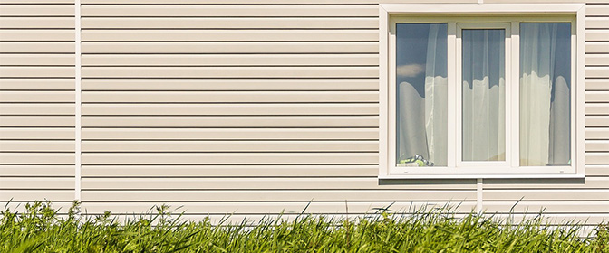

Прогресс строительного дела не стоит на месте. Все большую популярность приобретают новые материалы. Они не уступают по качественным характеристикам, и, что немаловажно, весьма привлекательны с эстетической точки зрения. Одним из таких модных материалов является сайдинг.
Широкий ассортимент
Прочность, устойчивость к разрушительному воздействию температурных перепадов, коррозии, приятный глазу внешний вид. Все эти качества имеет стальной сайдинг, а также член этого «семейства», изготовленный из алюминия.
Сферы их использования достаточно широки. От частного домостроения до административных зданий и объектов хозяйственного назначения - ангары, цеха, различные складские помещения.
Привлекательность сайдинга обусловлена еще и тем, что выпускаются эти изделия в широкой номенклатуре, как по размеру, так и по цвету. Используя данные материалы, вы можете быть спокойны за здание и имущество, ибо они весьма устойчивы к воздействию огня.
Весьма интересны аналогичные конструкционные элементы из дерева. Вернее, это плотно спрессованное древесное волокно, в которое добавлены различные минеральные смолистые вещества. Именно они и обеспечивают прочностью. Поверхность окрашена. И не одним, а несколькими слоями краски.
В регионах с обильными осадками он не так востребован, как на территориях, где их мало. Причина в том, что любые изделия из дерева, либо на его основе, весьма восприимчивы к негативному воздействию повышенной влажности. Склонны разбухать, коробиться.
Одними из последних пополнений этого семейства строительных материалов являются изделия из цемента, смешанного с целлюлозой. Волокна придают прочность. Окраска может быть любой. К числу достоинств также следует отнести устойчивость к воздействию огня, простоту изготовления, и относительно низкую стоимость.
Что более всего у застройщиков ценится?
Те, кто занимается индивидуальным домостроительством, в числе наиболее желанных конструкционных элементов называют виниловый сайдинг.
Стоимость его невелика. Поэтому фасад дома, облицованный данным материалом, окажется значительно дешевле, чем тот, что облицован кирпичом, керамической плиткой, доской, штукатурными листами. Помимо этого, процесс обшивки не столь трудоемок, не требуются всевозможные растворы и смеси. Результатом же будет доволен всякий домовладелец. Экстерьер получается современным, приятным глазу. Ему многие годы не потребуется ремонт. Винил не коробится и не разбухает, как дерево. Не покрывается трещинами, как кирпич. Не отваливается пластами, как штукатурка. Уход за ним ограничивается удалением накопившейся пыли. А это абсолютно несложно.
О некоторых особенностях
Данный вид сайдинга изготовлен из поливинхлорида. Он представляет собой панель-полосу. Она имеет кромку (перфорация) для вставки гвоздя либо шурупа. Если говорить о его профиле, то он может быть как одинарный, так и двойной (в «елочку», в «корабельную доску»).
Внешний вид также разный. Есть гладкий, без рисунка. Есть, имитирующий древесную структуру. Бывает панель от одной до трех досок. Вертикального или горизонтального монтажа. Палитра цветов весьма обширна - их около двух десятков.
Краски весьма колоритны, устойчивы к воздействию солнечных лучей и атмосферных осадков. Эти качества обеспечивает использование в составе красителей диоксида титана. Сам по себе данный химикат ярко белого цвета, поэтому в какой бы цвет не была окрашена панель, она имеет естественную, природную окраску. На это следует обратить внимание при покупке, так как слишком резкий, броский цвет материала свидетельствует об отсутствии диоксида. Это значит, что панель под воздействием солнечных лучей будет выцветать.
Как правильно устанавливать
Да, виды сайдинга разнообразны, но последовательность установки практически идентична. Монтаж осуществляется на предварительно сделанную настенную обрешетку. Одна горизонтальная панель стыкуется с другой путем нахлестки. Внизу они "запираются на замок", а в верхней части сначала сколачиваются гвоздями через перфорацию, либо прикручиваются шурупами, а уж потом следует закрытие замка с очередной панелью.
Гвозди, либо шурупы, следует применять или оцинкованные, или из алюминия. Прибиваем или завинчиваем не до упора - необходимо, чтобы они выступали примерно на миллиметр. Это необходимо делать, чтобы при резком изменении температуры окружающей среды материал не подвергался деформации, и, следовательно, экстерьер здания не терял своего вида.
В принципе, если у вас есть личный опыт строительных работ, то провести самостоятельно отделку фасада дома не составит большой проблемы. Вместе с материалом вы получаете инструкцию, в которой детально расписана последовательность действий. Но, прежде чем приступить к работе, лучше всего осмотреть уже облицованное строение. Уточнить неясные моменты с теми, кто уже занимался такого рода работой.
Для вашего блага
В чем вы выигрываете, приобретая и устанавливая сайдинг из винила? Ваш частный дом в черте города, либо усадьба в сельской местности или дачном кооперативе станет эффектно выглядеть. Даже дом, которому несколько десятков лет, будет иметь современный вид, словно он только что построен.
Тем более что это не ударит по вашему семейному бюджету, так как данный облицовочный материал является вполне доступным для граждан, имеющих средний уровень дохода.
Если же вы располагаете средствами, и не желаете экономить на качестве, то можно купить сайдинг, при производстве которого не использовалось сырье, бывшее в употреблении. Эти экологически безупречные изделия вы можете определить даже по их внешнему виду - их тыльная, обращенная к стене, сторона не имеет оттенка серого цвета.
Есть еще один признак качественности - это логотип VSI и ярлык ISO 9002. Ну, и, конечно же, цена. Отличный материал дешевым не бывает. Впрочем, решив использовать данное изделие, просмотрите в Интернете перечень предприятий, торгующих им в вашем регионе. Обратите внимание на отзывы и комментарии со стороны клиентов. Если фирма существует давно, и оценки ее работы благоприятного характера, то обращайтесь именно к ней. Не рискуйте вступать в контакт с фирмами-однодневками, так как есть шанс заплатить деньги за недоброкачественный товар.
Никогда не вычисляйте количество необходимого вам материала «на глаз». Изучите план домостроения. Тщательно проведите промер того, что у вас есть в реальности, так как параметры по плану могут отличаться в меньшую либо большую сторону.
Данные запишите. Возьмите с собой проект. Продавец-консультант определит оптимальное количество того, что вам необходимо.
Доверьте дело специалистам
Если же у вас нет времени самостоятельно заниматься обустройством экстерьера, то подберите фирму, которая сделает это «под ключ». Солидные структуры могут осуществлять не только функции продажи и доставки. Их профессионалы проведут замеры, дадут полезные советы, оперативно осуществят монтаж. Кстати, если работу вы доверили фирме, не позабудьте взять гарантийный талон. Именно он будет законным основанием требовать устранения того или иного брака или недоделки.
сайдинг алматы
Источник: materik-m.ru